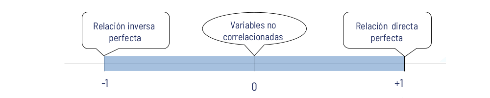

Coeficiente de correlación
Métodos y Simulación Estadística
Coeficiente de correlación
Es una medida de la magnitud de la *asociación lineal** entre dos variables. Indica si los puntos tienen una tendencia a disponerse alineadamente y es útil para determinar si hay relación lineal entre las variables. El coeficiente de correlación presenta las siguientes características:
- Toma valores entre \(-1\) y \(1\).
- Cuanto más cerca esté de \(1\) o \(-1\) mejor será el grado de relación lineal. Siempre y cuando no existan observaciones anómalas o atípicas.
- Valores cercanos a \(0\) indican la no relación lineal entre las variables

Un valor cercano a \(1\) indica asociación directa o positiva y un valor cercano a -1 indica asociación inversa o negativa. Si el valor es cercano a \(0\) indica una asociación débil.
- Se denota con la letra \(r\) y su fórmula de cálculo es la siguiente:
\[r = \dfrac{n \Bigg(\displaystyle\sum_{i=1}^{n} x_{i}y_{i} \Bigg) \Bigg(\displaystyle\sum_{i=1}^{n} x_{i} \Bigg) \Bigg(\displaystyle\sum_{i=1}^{n} y_{i}\Bigg)}{ {\sqrt{n \Bigg(\displaystyle\sum_{i=1}^{n} x_{i}^{2} \Bigg) - \Bigg(\displaystyle\sum_{i=1}^{n} x_{i} \Bigg)^{2}} } {\sqrt{n \Bigg(\displaystyle\sum_{i=1}^{n} y_{i}^{2} \Bigg) - \Bigg(\displaystyle\sum_{i=1}^{n} y_{i} \Bigg)^{2}}}}\]
\[r = \dfrac{cov(xy)}{\sqrt{s_{x}^{2}\hspace{0.1cm} s_{y}^{2}}}\]
Este indicador fué propuesto por Karl Pearson por lo que se conoce como coeficiente de correlación de Pearson y exige que las variables \(X\) y \(Y\) sean variables cuantitavas en escala de intervalo o de razón y normalidad de las variables.
Los valores obtenidos del coeficiente de correlación permiten clasificar la relación lineal entre las variables de la siguiente forma:
| Coeficiente de corelación | Relación lineal |
|---|---|
| \(0.8 \leq r < 1.0\) | Positiva fuerte |
| \(0.3 \leq r < 0.8\) | Positiva debil |
| \(-0.3 < r < 3\) | No existe |
| \(-0.8 < r \leq -0.3\) | Negativa debil |
| \(-1.0 \leq r \leq -0.8\) | Negativa fuerte |

(c) \(\rho = -0.75\). \(\hspace{.5cm}\)(d) \(\rho = -0.50\). \(\hspace{.5cm}\) (e) \(\rho = -0.25\). \(\hspace{.5cm}\) (f) \(\rho = 0.0\).

(c) \(\rho = 0.50\).\(\hspace{.5cm}\) (d) \(\rho = 0.75\). \(\hspace{.5cm}\) (e) \(\rho = 0.90\). \(\hspace{.5cm}\) (f) \(\rho = 1.0\).
Ejemplo
Se cuenta con la información de una muestra aleatoria de 6 pueblos del departamento, donde se observaron las variables número de policías y número de delitos registrados durante el mes pasado, la información obtenida se presenta a continuación:
Mediante el coeficiente de correlación identificar el tipo de relación que pueda existir entre estas dos variables.
Sea \(X\) la variable que representa el número de policías y sea \(Y\) la variable que representa el número de delitos. Para construir el coeficiente se requieren las sumatorias de \(x_{i}\), \(y_{i}\), \(x_{i}^{2}\), \(y_{i}^{2}\) y de \(x_{i}y_{i}\)
x=c(15, 17, 25, 27, 17, 12) y=c(17, 13, 5, 7, 7, 21) n # 6 sum(x) # 113 sum(y) # 70 sum(x^2) # 2301 sum(y^2) # 1022 sum(x*y) # 1161 cor(x,y) # [1] -0.8351746
\[\widehat{\rho_{_{x,y}}}=r=\dfrac{6 (1161)-(113)(70)}{\sqrt{6(2301)-(113)^2}\sqrt{6(1022)-(70)^2}} = -0.80352\]
Por lo tanto, el resultado obtenido del coeficiente de correlación \(r = −0.8352\), se busca en la tabla 1, y se observa que existe una asociación lineal negativa y fuerte entre el número de policías y el número de delitos, es decir que entre más policías en un pueblo menor será el número de delitos en los pueblos.
Pruebas de hipótesis sobre \(\rho\)
Es importante verificar si de \(\rho\) es igual a cero o se puede considerar diferente de cero, a partir de la muestra de estudio. Para ello se utiliza un estadístico de prueba con distribución t-Studen con \(v=n-2\) grados de libertad
\(Ho: \rho =0\) \(Ha: \rho \neq 0\)
Estadístico de prueba
\[U = \dfrac{r \sqrt{n-2}}{\sqrt{1-r^{2}}} \sim t_{v:n-2}\]
x=c(15, 17, 25, 27, 17, 12)
y=c(17, 13, 5, 7, 7, 21)
r=cor(x,y)
r*sqrt(6-2)/sqrt(1-r^2) # [1] -3.037082
cor.test(x,y, method = "pearson")
Pearson's product-moment correlation
data: x and y
t = -3.0371, df = 4, p-value = 0.03851
alternative hypothesis: true correlation is not equal to 0
95 percent confidence interval:
-0.98148791 -0.07328662
sample estimates:
cor
-0.8351746
Suponiendo que el valor p obtenido es pequeño, se concluye que \(\rho \neq 0\)
En caso de variables no normales, con presencia de datos atípicos o procedentes de variables cualitativas que son cuantificadas a través de escalas de intervalos, se recomienda el uso del coeficiente de correlación de Spearman